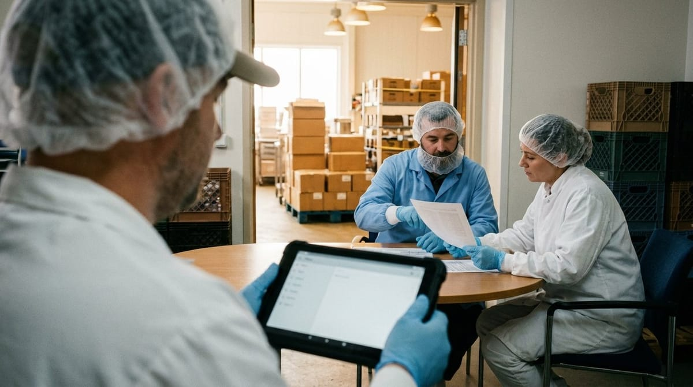

Modelo de precios de un software de calidad

Modelo de precios de un software de calidad: cómo se estructura el cobro y qué debes tener en cuenta
Cuando un responsable de calidad empieza a evaluar soluciones tecnológicas para su departamento, una de las primeras preguntas que surge es cuánto va a costar. Sin embargo, antes de hablar de cifras concretas, conviene entender algo más básico: el modelo de precios de un software de calidad. La estructura de cobro que elige cada proveedor condiciona no solo el desembolso inicial, sino también la escalabilidad de la solución, los costes ocultos que aparecen más adelante y la facilidad para ajustar la herramienta al crecimiento de tu empresa. En este artículo desglosamos los modelos más habituales y te damos las claves para tomar una decisión informada.
Los tres modelos habituales: precio por usuario, precio por planta o precio por módulo
La industria agroalimentaria presenta una gran diversidad de estructuras empresariales: desde cooperativas con una sola instalación hasta grupos multinacionales con decenas de plantas repartidas por varios países. Esta variedad ha llevado a los proveedores de software a desarrollar distintas formas de calcular el precio de sus soluciones. Las tres más extendidas son las siguientes.
Precio por usuario. En este modelo, el coste se calcula en función del número de personas que van a acceder a la plataforma. Es el esquema más parecido al que muchos conocen a través de herramientas de ofimática o CRM. Su ventaja principal es la previsibilidad: sabes exactamente cuánto pagas en función de cuántos usuarios tienes activos. Su inconveniente surge cuando el número de personas que necesitan consultar datos crece de forma puntual, por ejemplo durante auditorías o cuando se incorporan responsables de turno nuevos, ya que cada usuario adicional implica un coste adicional.
Precio por planta. Aquí el cobro se asocia a cada centro productivo o instalación, independientemente de cuántos usuarios trabajen en ella. Este modelo resulta especialmente interesante para empresas con varias plantas, porque permite que todos los empleados de una instalación accedan al sistema sin un coste por cabeza. Es habitual en soluciones pensadas para la gestión de la inocuidad y la trazabilidad a escala industrial, donde el número de usuarios puede variar mucho en función del turno o la temporada.
Precio por módulo. En este caso, el cliente paga según las funcionalidades que activa: gestión de no conformidades, control de proveedores, auditorías internas, planes APPCC, documentación, etc. Es un modelo flexible que permite empezar con lo imprescindible e incorporar capacidades a medida que la organización madura. La contrapartida es que la suma de módulos puede acabar siendo mayor de lo previsto si no se planifica bien desde el inicio.
Muchos proveedores combinan estos enfoques, por ejemplo cobrando por planta y luego añadiendo módulos opcionales. Por eso es fundamental pedir un desglose claro antes de firmar cualquier contrato.
Qué mirar más allá del precio de lista: límites de uso, soporte incluido y actualizaciones
El precio de lista es solo el punto de partida. Una vez que un software parece encajar en tu presupuesto, hay que analizar en detalle qué incluye realmente esa cifra y qué queda fuera.
Límites de uso. Algunos contratos establecen un volumen máximo de registros, documentos almacenados o análisis realizados al mes. Si tu operativa supera ese umbral, se aplican tarifas adicionales. Esto es especialmente relevante en sectores donde el volumen de datos de control crece de forma exponencial, como ocurre con los registros de temperatura, los resultados de análisis microbiológicos o los partes de inspección. Recuerda que el cumplimiento de los criterios establecidos en el Reglamento (CE) 2073/2005 relativo a los criterios microbiológicos aplicables a los productos alimenticios (Reglamento [CE] 2073/2005, 2005) puede generar un volumen considerable de registros que tu software debe ser capaz de gestionar sin penalizaciones económicas.
Soporte incluido. No todos los contratos contemplan el mismo nivel de atención al cliente. Algunos proveedores incluyen soporte básico por correo electrónico, mientras que otros ofrecen un gestor de cuenta dedicado, formación inicial, sesiones de onboarding y asistencia telefónica. Para un departamento de calidad, en el que los plazos de respuesta ante una incidencia pueden ser críticos, el nivel de soporte puede marcar la diferencia entre resolver un problema en horas o en días.
Actualizaciones y evolución normativa. La legislación alimentaria evoluciona de forma continua, y tu software debe adaptarse a esos cambios. Pregunta explícitamente si las actualizaciones normativas y de funcionalidades están incluidas en la cuota anual o si se facturan aparte. Un software que no se actualiza no solo pierde valor con el tiempo, sino que puede convertirse en un riesgo de cumplimiento.
Implementación y migración de datos. El coste de poner en marcha la herramienta —parametrización, carga de datos históricos, integración con otros sistemas como ERP o LIMS— suele facturarse por separado. Pide siempre un presupuesto detallado de estos servicios antes de comparar alternativas.
Cómo elegir el modelo según el tamaño y número de plantas
No existe un modelo de precios universalmente superior. La mejor opción depende de las características concretas de tu organización. Aquí tienes algunas orientaciones prácticas.
Si gestionas una sola planta con un equipo de calidad reducido, el modelo por usuario puede ser el más económico y sencillo de gestionar. Pagarás exactamente por las personas que usan la herramienta y tendrás un coste predecible.
Si tu empresa tiene varias plantas o está en proceso de expansión, el modelo por planta suele ofrecer mejor relación calidad-precio a medio plazo. Puedes incorporar usuarios sin coste adicional y escalar geográficamente de forma ordenada. Este modelo también facilita la estandarización de procesos entre instalaciones, algo que exigen normas como las reconocidas por la Global Food Safety Initiative (GFSI, s.f.) para garantizar un nivel homogéneo de seguridad alimentaria en toda la cadena.
Si tu organización tiene necesidades muy específicas o está digitalizando procesos de forma progresiva, el modelo por módulo te permite empezar con lo esencial e ir ampliando la funcionalidad sin comprometer todo el presupuesto desde el primer día. Es especialmente útil cuando el equipo directivo aún no está convencido del retorno de la inversión y necesitas demostrar valor antes de escalar.
En todos los casos, te recomendamos construir un escenario a tres años vista: ¿cuántos usuarios tendrás? ¿Cuántas plantas? ¿Qué módulos necesitarás activar? Hacer este ejercicio antes de negociar te dará una posición mucho más sólida.
Diferencia entre modelo de precios y cuánto cuesta: estructura de cobro frente a cifras concretas
Es importante distinguir entre dos preguntas que a menudo se confunden. «¿Cuál es el modelo de precios?» pregunta por la estructura: cómo se calcula el coste, qué variables lo determinan, qué está incluido y qué no. «¿Cuánto cuesta?» pregunta por las cifras concretas en función de una configuración específica.
Comprender el modelo de precios primero te permite hacer comparaciones honestas entre proveedores, porque las cifras solo son comparables cuando las variables son equivalentes. Un software que parece más barato puede resultar más caro si cobra extra por soporte, actualizaciones o usuarios adicionales.
Si quieres profundizar en las cifras reales del mercado, en nuestro blog puedes consultar el artículo sobre cuánto cuesta un software de calidad alimentaria, donde desglosamos rangos de inversión habituales en función del tamaño de la empresa. También puede interesarte el artículo sobre cuánto cuesta un software de gestión de incidencias si ese es el punto de partida de tu digitalización.
En Solved trabajamos con un modelo transparente, diseñado específicamente para la industria agroalimentaria. Si quieres entender cómo aplicaría nuestra estructura de precios a tu organización concreta, estaremos encantados de acompañarte en ese análisis sin compromiso.
Referencias
- Global Food Safety Initiative. (s.f.). Global Food Safety Initiative (GFSI). https://mygfsi.com/
- Reglamento (CE) n.o 2073/2005 de la Comision, de 15 de noviembre de 2005, relativo a los criterios microbiologicos aplicables a los productos alimenticios. (2005). https://eur-lex.europa.eu/eli/reg/2005/2073/oj?locale=es